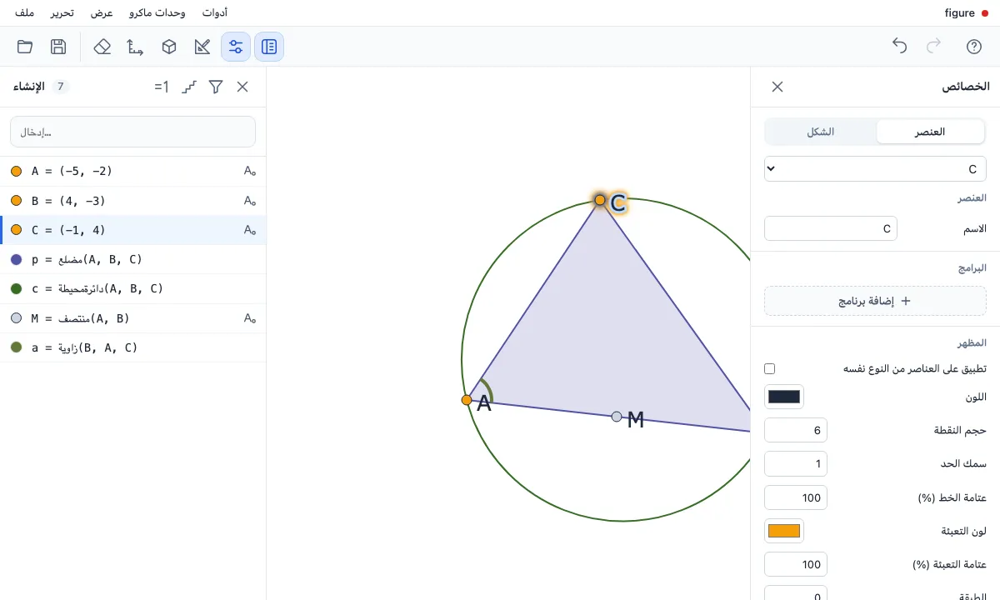
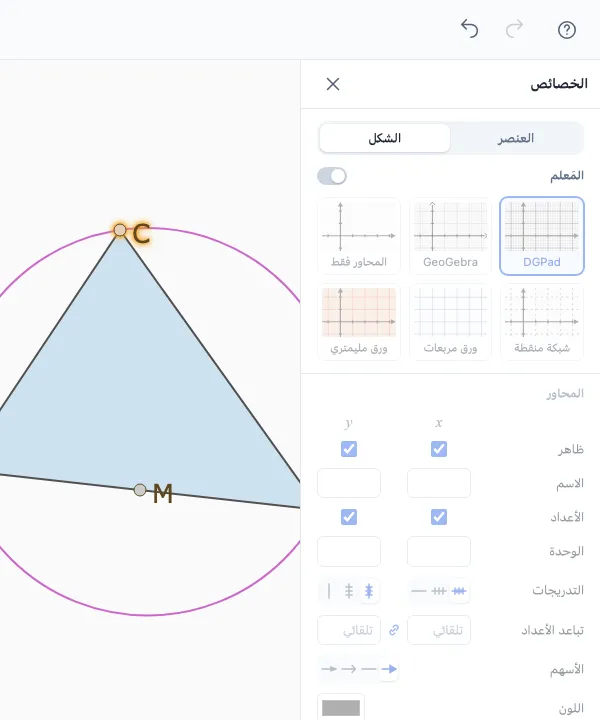

الخصائص والمَعلم

اللوحة
- تُفتح بـ أو بـ في منطقة السياق؛ وتُغلق بعلامة ✕ فيها أو بالزر نفسه أو بـ Esc.
- النقر بالزر الأيمن يفتحها في أي وقت على ما يشير إليه: عنصر أو اسمه أو سطره، والتحديد كله إذا كان العنصر جزءًا منه، وتبويب الشكل في مكان فارغ أو على محور. تحتفظ الأداة المستخدمة بوسائطها، وإغلاق اللوحة، بـ Esc مثلًا، يعيد لوحة الأدوات إذا كانت قد حلّت محلها، مع بقاء الأداة مستخدمة. الاستثناء الوحيد: أثناء تعريف ماكرو، لا يفعل النقر بالزر الأيمن شيئًا.
- تشغل مكان لوحة الأدوات: فتح إحداهما يغلق الأخرى.
- تبويبان: العنصر والشكل.
- يُختار العنصر المراد ضبطه في الشكل، أو من سطره، أو من قائمة «اختر عنصرًا…» (بما فيها العناصر المخفية). النقر في الشكل يحدد بدل أن ينشئ؛ والأزرار والخانات تُحدَّد دون أن تُفعَّل. أما أداة من لوحة الأدوات أو سطر الإدخال فينشئان كالمعتاد، ويظهر العنصر المنشأ في اللوحة. ويعرض ضلعُ مضلعٍ أو رأسُه المحدَّد إعداداتِ المضلع.
- التعديلات فورية ويمكن التراجع عنها.
- الحقول العددية: السحب الأفقي يضبط القيمة (Shift: أدق بعشر مرات)، والنقر يسمح بكتابتها. والسحب الواحد خطوة تراجع واحدة.
- زر ↺ بجانب لون يعيده إلى لون الأداة الافتراضي.
تبويب «العنصر»
| القسم | الإعدادات |
|---|---|
| العنصر | الاسم؛ وللأمر أو التعبير التعريف |
| البرامج | لنقطة أو تعبير: سلحفاته وبرامج أحداثه، بالكتل |
| المظهر | التطبيق على العناصر من النوع نفسه، اللون، حجم النقطة، السمك، الحد، عتامة الخط والتعبئة، لون التعبئة، التقطيع، الطبقة (ترتيب الرسم) |
| العرض |
عنصر ظاهر، إظهار الاسم، عنصر ثابت (مضلع)، عنصر
خامل، حجم النص، الأرقام العشرية للقيمة (أو عدم
إظهارها؛ وللنص، أرقام قيمه %صيغة%)،
مرئي إذا، عرض حقل
الإدخال
|
| النقطة | الشكل (دائرة، مربع، صليب، معين)، موضع الاسم بالدرجات، الأثر، الخطوة الأفقية والعمودية (تحريك بقفزات) |
| القطعة المستقيمة | الترميز (خطوط للأطوال المتساوية) |
| الزاوية | نصف قطر القوس، علامة الزاوية القائمة (كوس مفتوح، قوس، مربع، نقطة، كوس) |
| المحل الهندسي، القائمة | عدد النقاط؛ سمك القطع |
| المنزلقة | الخطوة، الطول، عمودي، لون المقبض وحجمه |
| إطار | للصورة: اللون، السُّمك (0: بلا إطار)، عتامة الخط، الخط المتقطع؛ تبقى عتامتها وطبقتها في المظهر |
| التحريك | السرعة (0: توقف)، الاتجاه المعاكس، عند الطرف: البدء من جديد أو ذهاب وإياب أو التوقف |
مرئي إذا
في قسم العرض: اسم تعبير، أو صيغة (m == 2)، أو لا
شيء. لا يظهر الكائن إلا إذا كان الشرط صحيحًا، ولا يمكن أن يعتمد
الشرط على الكائن نفسه.
يذكر سطر مربع الاختيار الكائنات التي هو شرطها: إضافة اسم تربط الكائن بالمربع، وحذفه يجعله مرئيًا دائمًا. حذف المربع يُبقي هذه الكائنات مرئية دائمًا.
الألوان عند الإنشاء
يأخذ العنصر المنشأ لون نوعه: النقاط الحرة والنقاط على عنصر برتقالية، والنقاط المنشأة رمادية، والقطع حمراء، والمستقيمات زرقاء، والدوائر خضراء، والمضلعات مملوءة بالنيلي… وللشكل الجديد خلفية بيضاء.
عدة عناصر
في التحديد المتعدد، لا تظهر إلا الإعدادات المشتركة بين الجميع؛ والقيمة التي تختلف من عنصر إلى آخر تُكتب بخط مائل رمادي. وCtrl-نقر أو Shift-نقر أو الضغط المطوّل (في الشكل أو في لوحة «الإنشاء») تضيف عنصرًا أو تزيله.
العناصر الخاملة
عنصر خامل: لا يستجيب العنصر بعد ذلك لمرور المؤشر ولا للنقر ولا للّمس، فلا يُسحب ولا يُعيَّن في الشكل: يصل المؤشر إلى ما تحته. وما دامت لوحة الخصائص مفتوحة، لا يكون أي عنصر خاملًا، حتى يمكن تحديده وإلغاء تحديد الخانة.
تبويب «الشكل»

النقر على محور يفتح هذا التبويب.
| القسم | الإعدادات |
|---|---|
| المَعلم | ظاهر أو لا؛ نماذج DGPad وGeoGebra والمحاور فقط والشبكة المنقطة وورق المربعات والورق المليمتري (المظهر فقط، دون التكبير ولا الخلفية) |
| المحاور (x و y) | ظاهر، الاسم، الأعداد، الوحدة (π: مضاعفات π/2)، التدريجات، تباعد الأعداد (فارغ: auto؛ و🔗 يربط x و y)، الأسهم، اللون، حجم الأعداد وخطها العريض، نمط DGPad أو GeoGebra، أنصاف المحاور الموجبة |
| الشبكة | ظاهرة أو لا، تباعد الخطوط، التقسيمات، اللون (لون المحاور افتراضيًا)، السمك، خط متصل أو منقط أو متقطع |
| التكبير والتحريك | محور ثابت على الشاشة، التكبير حول المبدأ |
| الشكل | الخلفية؛ الزوايا بالدرجات (افتراضيًا) أو بالراديان؛ القطع فوق المضلعات |
في الأبعاد الثلاثة
| القسم | الإعدادات |
|---|---|
| المحاور | ثلاثي السطوح ظاهر، اللون، السمك |
| الأرضية | ظاهرة، اللون (↺: أزرق من الأعلى، بني من الأسفل)، العتامة، الحجم، التباعد، لون الخطوط وسمكها |
| العرض | المنظور |
يمكن التراجع عن هذه الإعدادات؛ أما تكبير العرض وتحريكه وتدويره فلا.